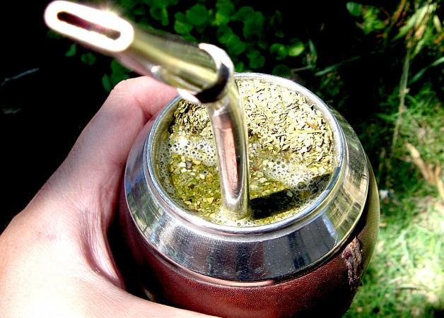

Mate

Description
Is a traditional South American caffeine-rich infused herbal drink.
Ingredients
- Yerba mate
- Hot water
- "Bombilla" (metal straw)
- Container called "mate"
- Thermos
Steps
- Put yerba in the container
- Insert the bombilla
- Add hot water (not boiling)
- Share it whit yours friends!
Now live the experience of drinking mate!